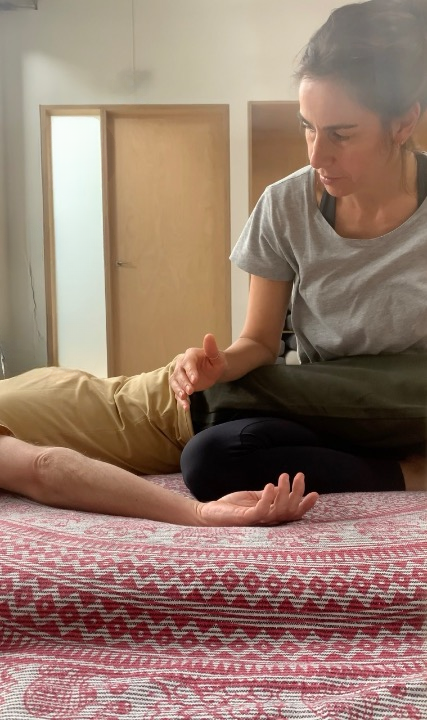

Sessões de Thai Yoga Massage e movimento para aliviar rigidez postural, soltar ombros e restaurar liberdade no corpo depois de longas horas sentado.
Um trabalho focado em tensão acumulada do dia-a-dia e padrões posturais modernos.

O padrão que se instala
O corpo fala. Primeiro em silêncio. Depois em voz alta.
Trabalho com Thai Yoga Massage, adaptando a abordagem ao tipo de tensão, ao estilo de vida e ao estado do corpo. Através de alongamentos assistidos, pressão profunda e mobilização articular, atuo sobre os padrões que horas sentado vão criando e que se instalam sem dar sinal.
Marcar sessãoPara quem é
O que dizem
"O ambiente deixou-me confortável e com uma sensação apaziguadora. O meu corpo relaxou. O desconforto que sentia no pescoço e nos ombros desvaneceu e os músculos relaxaram. Com certeza a repetir."
Joana
Professora do 1.º ciclo
"Desde o primeiro momento, senti-me acolhida com presença e cuidado, o que me permitiu entregar completamente à sessão. A combinação de alongamentos, pressões e movimentos fluidos foi profundamente relaxante e revitalizante. Abstrai-me de tudo à minha volta, estando totalmente no momento. Senti uma leveza que me acompanhou durante toda a sessão e que se traduziu numa noite extremamente tranquila e num sono profundo e reparador. Grata por tanto cuidado e entrega."
Sílvia
Professora de Matemática Universitária
"Tenho os ombros e o pescoço sempre em tensão, é o meu ponto fraco, e a Joana sabe isso. Surpreendeu-me perceber que o alívio nas costas vem de onde menos esperas. Há sempre uma parte que não me lembro, ou são as mãos, ou é a cabeça, o corpo vai a um sítio onde a mente não chega. Depois saí a andar mais direita. As costas mais leves, como se tivesse tirado um peso."
Marta
Freelancer · produção e casting
Uma sessão de 90 minutos em Lisboa. Sem burocracia.
Falar comigo no WhatsApp90 min · €75 · Lisboa · joanaclarinha@icloud.com · Respondo em 24h.